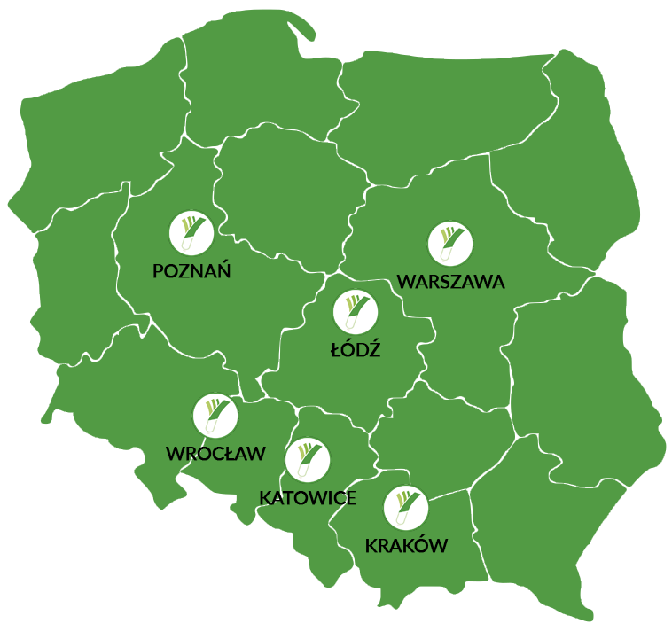

Pierwsze zamówienie zrealizowaliśmy we wrześniu 2017 roku, obecnie jesteśmy na etapie skalowania działalności na całą Polskę.
zrealizowanych zamówień
zaufanych rolników i producentów
miast w których dostępne są nasze produkty
Przez pierwszy rok od rozpoczęcia działalności działaliśmy wyłącznie w Warszawie. W listopadzie 2018 zdecydowaliśmy się na rozszerzenie naszej działalności. Dzisiaj PORA NA POLA obecne jest w 6 miastach, a wkrótce wdrożymy dostawy na terenie całej Polski.
Wnioskujemy o dofinansowanie opracowania i implementacji zupełnie nowej, innowacyjnej usługi realizacji dostaw zakupów do domu. Nasze koncepcyjne rozwiązania zawarte w projekcie są na dzień dzisiejszy unikatowe co najmniej w skali Europy w niszy dostaw żywności od rolników i małych producentów. Nasz projekt doskonale wpisuje się w Inteligentne Specjalizacje Podlasia i wymagania konkursu z poddziałania 1.2.1., co w połączeniu z dużymi pieniędzmi przeznaczonymi na program, daje nam bardzo duże szanse na znalezienie się na liście rankingowej.